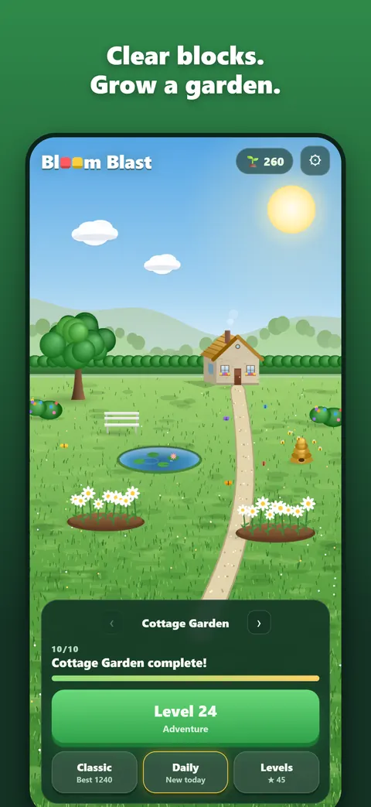
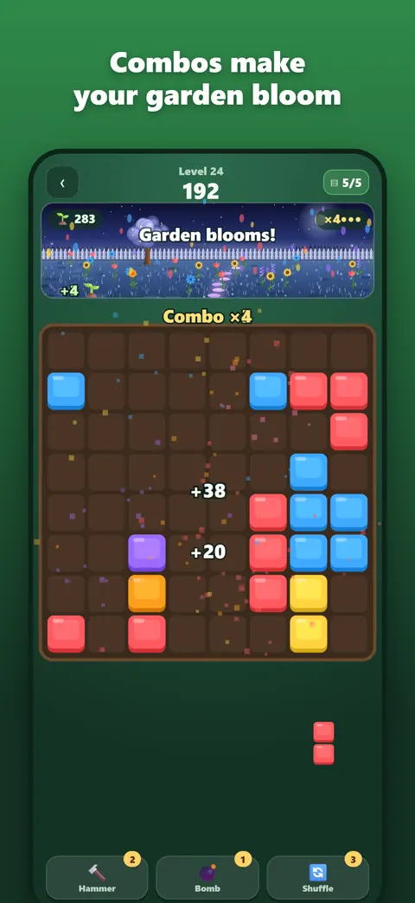
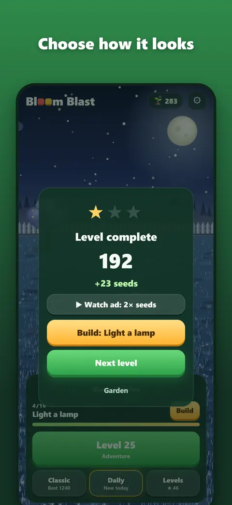
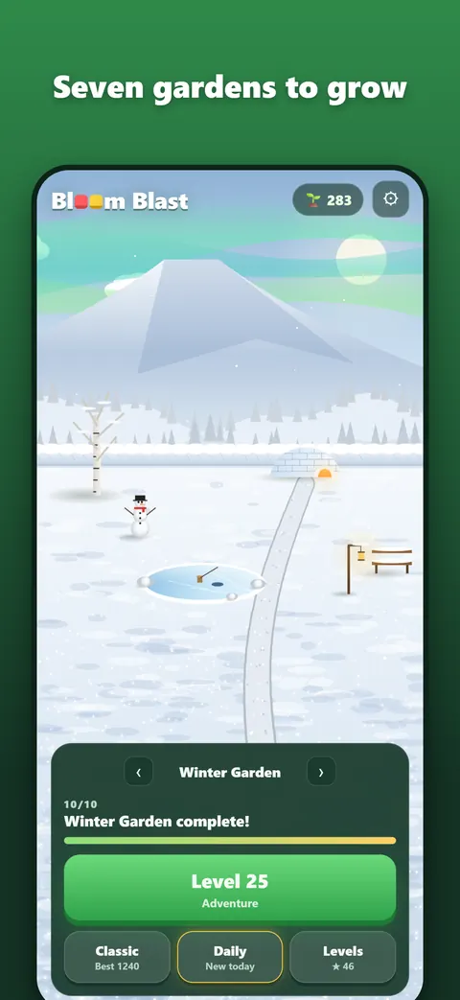

Games / Bloom Blast

Block puzzle + garden
Bloom Blast
Clear blocks. Earn seeds. Grow a garden that blooms with every combo. Drag blocks onto the board, clear rows and columns, and watch the garden above the board burst into flowers.




How to play
- Drag the three pieces onto the 8×8 board.
- Fill a row or column to clear it and earn seeds.
- Chain clears into combos: the bigger the combo, the bigger the bloom.
- Reach each level’s goal: bloom flowers, score points or clear lines.
Grow seven gardens
- Spend seeds to build your garden step by step.
- Every step has three styles, and you decide how it looks.
- Cottage, Japanese, Tropical, Autumn, Winter, Fairy and Moon gardens.
Power-ups
- Hammer breaks one block.
- Bomb clears a 3×3 area.
- Shuffle brings new pieces.
- Earn more as you build your garden.
A reason to come back
- Daily Level: a new puzzle every day, the same for everyone.
- Keep your streak going for bigger rewards.
- Hundreds of levels plus an endless Classic mode.
Tips
- Look at all three pieces before placing the first. The order matters more than any single placement.
- Keep a 3×3 space open. The big square is the piece that most often ends a run.
- Clearing a row and a column with one piece counts as a combo, and combos are where the seeds come from.
- Do not fill the board edge to edge early. Empty columns on one side give the long pieces somewhere to go.
- Use Shuffle before you are stuck, not after: it is most useful when the board still has room.
Questions
Is Bloom Blast free?
Yes. Rewarded ads are optional, and an optional purchase removes the ads between levels.
Can I play it in a browser?
Yes, at bloomblast.alaystudio.app, with no ads.
Does it work offline?
Yes. Levels, the garden and Classic mode all work without a connection.
How many levels are there?
Hundreds of levels across seven gardens, a new Daily Level every day and an endless Classic mode.